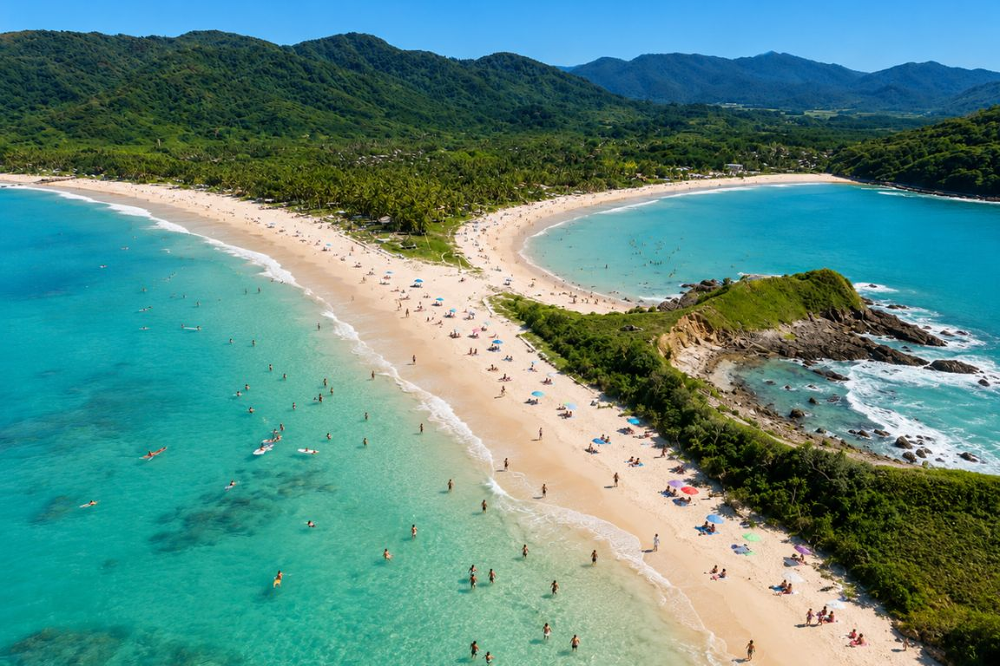
El Nido, Palawan
Turquoise lagoons and limestone cliffs, best explored by island-hopping tour.
Beaches, mountains, and heritage across 7,641 islands.
Explore destinations
Turquoise lagoons and limestone cliffs, best explored by island-hopping tour.
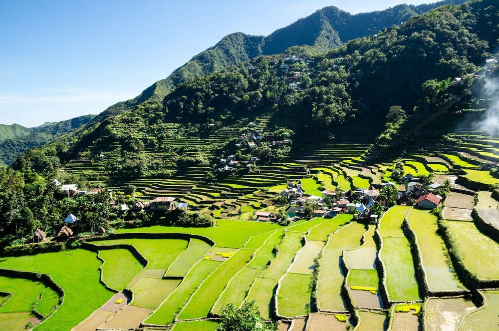
Terraces carved into the mountains of Ifugao by hand over 2,000 years ago.
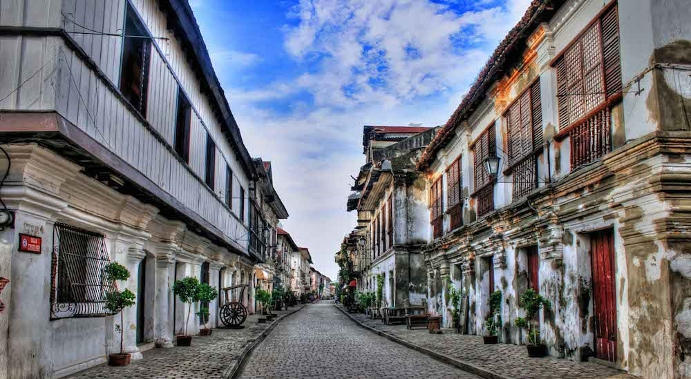
Cobblestone streets and Spanish-era houses in a preserved heritage town.
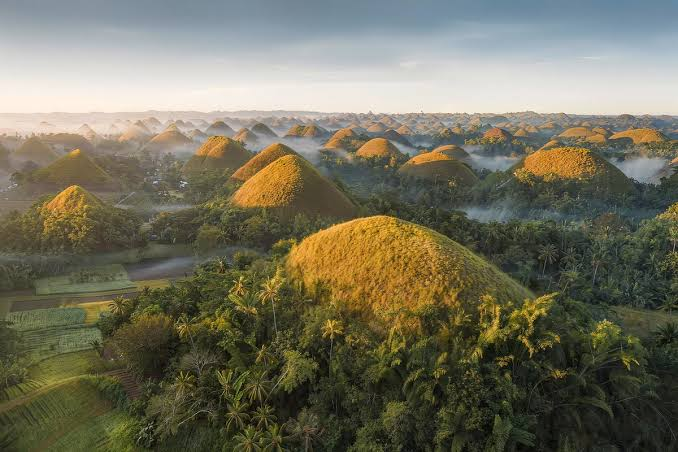
Over a thousand grass-covered hills that turn brown in the dry season.
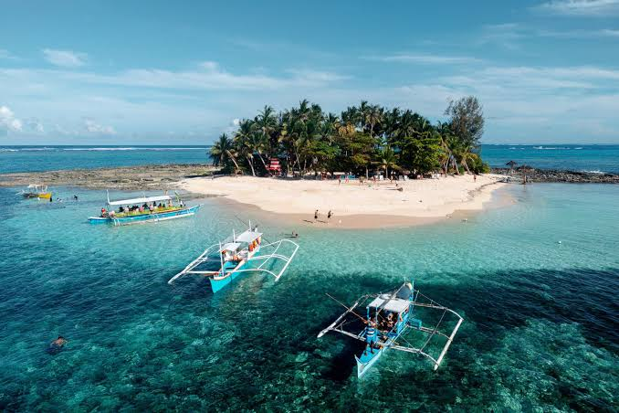
Surf breaks, palm-lined roads, and quiet lagoons on a laid-back island.
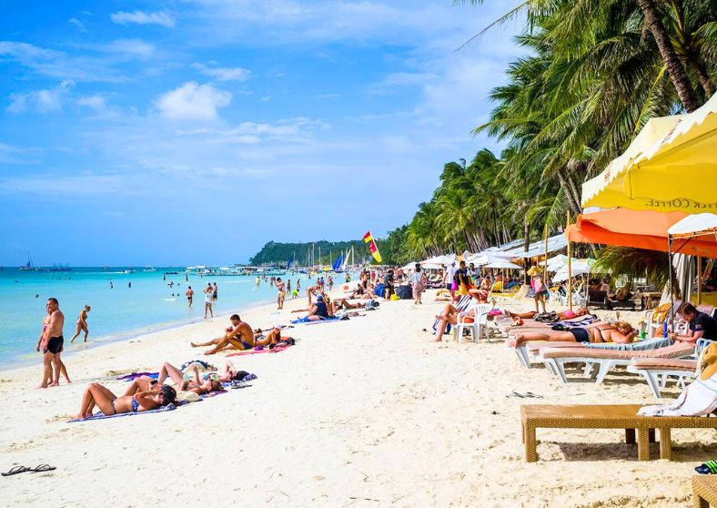
White Beach at sunset, with food and nightlife along the shore.
From the sea to the old towns, here are some of the things that make a trip here worth it.
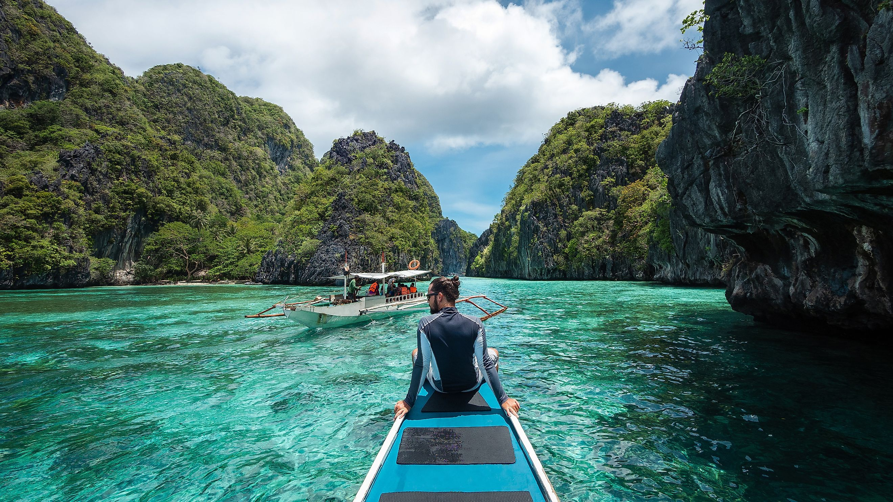
Hop between hundreds of beaches, lagoons, and sandbars on a traditional bangka boat. Most tours stop for a swim, snorkeling, and a grilled seafood lunch on the shore.
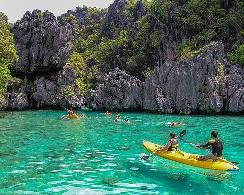
Paddle through clear lagoons and under limestone cliffs, such as the lagoons of El Nido in Palawan. It is quiet, easy for beginners, and the best way to reach small hidden coves.
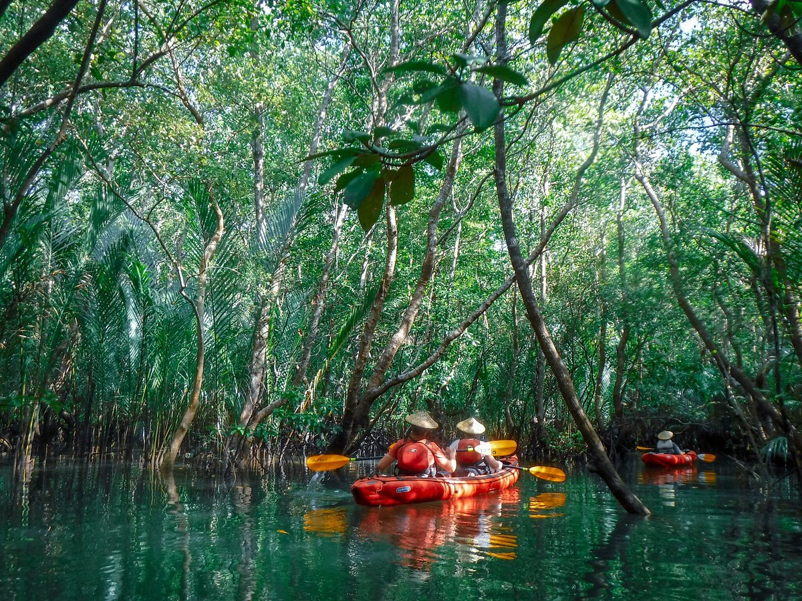
Glide along calm rivers and mangrove channels at a slow pace. You pass village life, birds, and green riverbanks that you cannot see from the road.
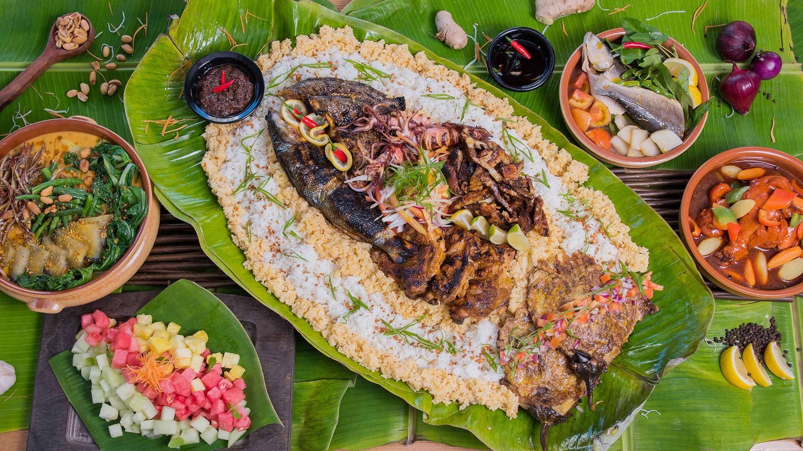
Every region has its own dishes. Try adobo and sinigang almost anywhere, empanada and longganisa in Ilocos, and halo-halo to cool down on a hot afternoon.
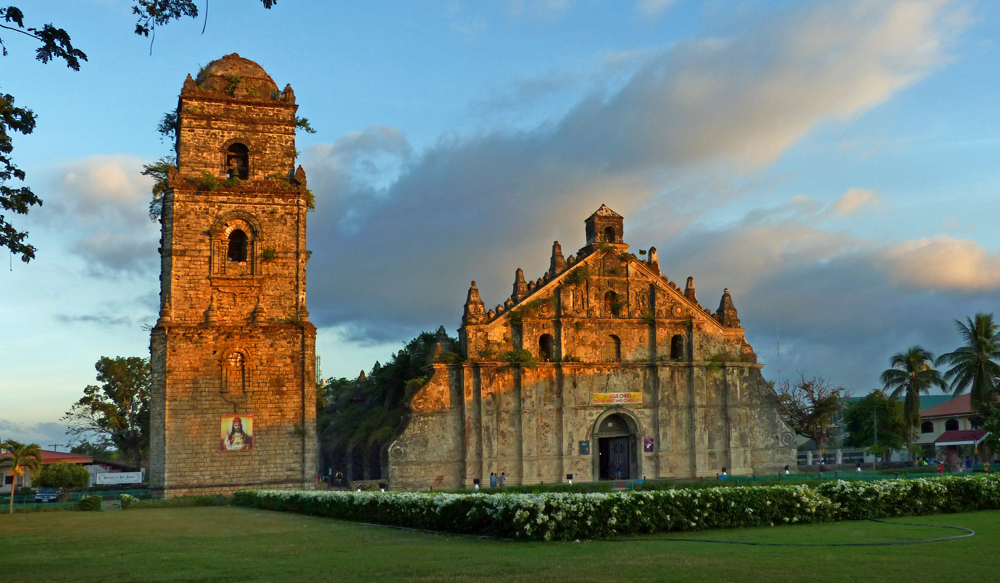
Built in the early 1700s from coral stone and brick, Paoay Church is known for the huge buttresses along its sides, made to protect it from earthquakes. It is one of the Baroque Churches of the Philippines listed as a UNESCO World Heritage Site.
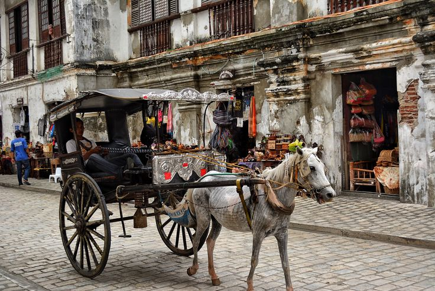
See the old town the traditional way, in a horse-drawn kalesa along its cobblestone streets. A short ride gives you a feel for how the town looked in the past.
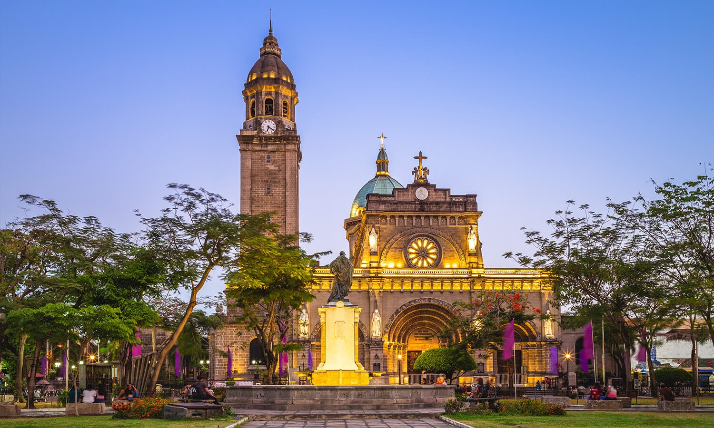
Intramuros means "within the walls". Built by the Spanish in the late 1500s, this walled city in the middle of Manila still has its stone walls, Fort Santiago, and San Agustin Church. Walking its streets is the easiest way to see Manila's colonial past in one afternoon.
Planning a trip or need help while you are traveling? Reach out to the Philippine Department of Tourism.
Send your questions about travel and tourist assistance.
touristassistance@tourism.gov.ph
Send an email